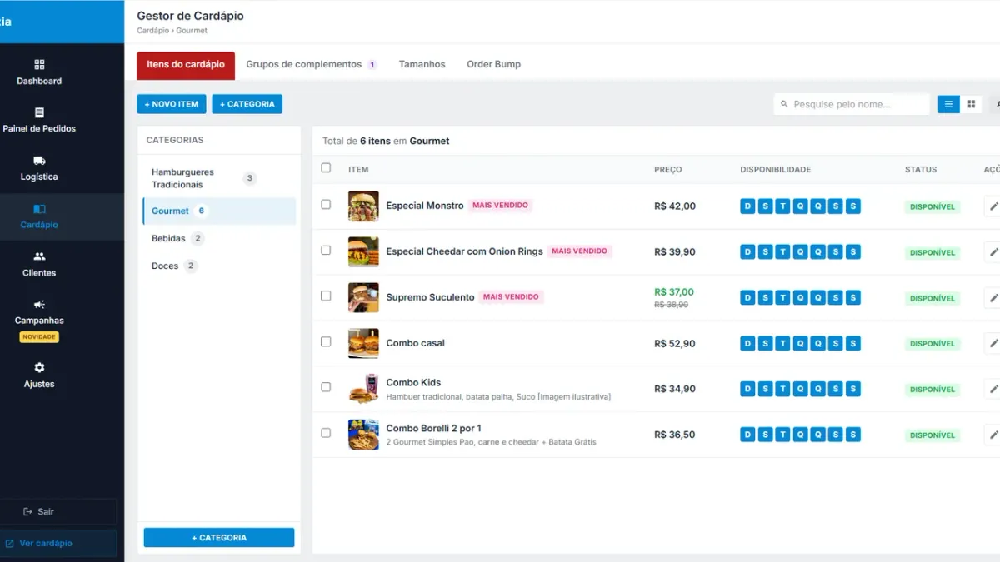

O que um bom cardápio digital deve ter: os 15 recursos que fazem vender

Cardápio digital não é um PDF com link. Um bom cardápio é uma ferramenta de venda: faz o cliente decidir rápido, monta o pedido sem erro e entrega tudo pronto para a cozinha. Esta é a lista do que ele precisa ter, separada pelo que importa para o cliente e para a loja.
Para o cliente pedir sem dúvida
- Foto em todo item. Prato sem foto vende menos e gera pergunta no WhatsApp.
- Descrição com ingredientes. "Pão brioche, 180g, cheddar, bacon" responde antes de perguntarem.
- Complementos e adicionais em grupos: ponto da carne, molhos, extras, com mínimo e máximo.
- Tamanhos: P/M/G, pizza por fatias, marmita pequena e grande.
- Taxa de entrega automática por bairro ou por km, já no total.
- Horário de funcionamento visível, com aviso quando a loja está fechada.
- Pedido agendado para quem quer garantir o almoço ou a festa.
- Pix e cartão online, além de dinheiro com troco.
- Abrir rápido no celular, sem baixar aplicativo.
Para vender mais por pedido
- "Peça também" (order bump): a batata ou o refri oferecido na hora certa.
- Etiquetas de destaque: Mais pedidos, Novidade, Combo, Oferta limitada.
- Cupom, cashback e fidelidade para o cliente voltar — veja cashback para delivery.
Para a loja não se perder
- Painel de pedidos com impressão automática e tela de cozinha.
- Base de clientes com telefone e histórico, que é sua — veja CRM para restaurante.
- Pixel da Meta e Google Analytics para medir os anúncios — veja como fazer anúncios para delivery.
O que não precisa (e encarece)
- Aplicativo próprio na loja de apps: o cliente não instala. Link e QR Code convertem mais.
- Comissão por pedido: cardápio bom não precisa cobrar percentual sobre o seu sucesso.
- Módulo fiscal caro se você ainda não emite nota no balcão.
Como o Menuzia atende a lista
Os 15 itens estão no Menuzia. Para comparar plataformas, use o checklist de escolha do melhor cardápio digital. Se você vende hambúrguer, veja o cardápio digital para hamburgueria.
Quanto custa
Tudo isso está no plano Básico, R$97/mês, sem comissão por pedido e sem fidelidade. Nossa equipe monta o cardápio com você.
Buscas relacionadas
O que donos de restaurante e delivery pesquisam antes de contratar — cada busca leva para a página que responde a ela:
Perguntas frequentes
O que não pode faltar em um cardápio digital?
Foto em todo item, adicionais organizados, taxa de entrega automática, pagamento online e um painel que receba o pedido pronto.
Cardápio digital precisa de foto em todos os itens?
Deveria. Item com foto gera menos pergunta e mais pedido. Comece pelos campeões de venda.
Qual a diferença entre cardápio digital e cardápio em PDF?
O PDF só mostra. O cardápio digital monta o pedido, soma taxa, recebe pagamento e manda para a cozinha. Veja a página sobre cardápio em PDF.
Cardápio digital precisa ter aplicativo?
Não. Ele abre no navegador do celular pelo link ou QR Code, sem instalar nada.
Quanto tempo leva para montar um cardápio digital?
No Menuzia, nossa equipe monta a partir das suas fotos e da sua lista de preços, inclusive de um PDF antigo.
Fale com um especialista do Menuzia
Sem comissão por pedido e sem fidelidade. Planos a partir de R$97/mês, com configuração feita pela nossa equipe.
Quero conhecer o Menuzia →